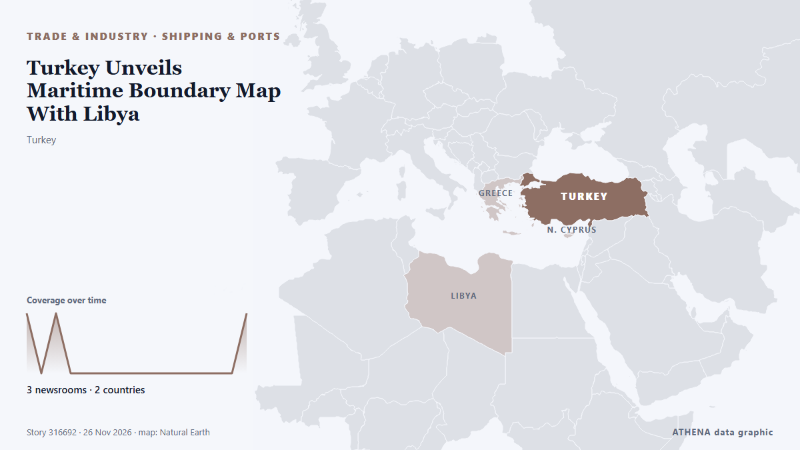

Ναυτιλία & λιμάνια
ΧορηγούμενοΠαρουσιάζεται από Cybernetics and Artificial Intelligence Lab Welcome to the Cybernetics and Artificial Intelligence Laboratory, established at the Department of Business Administration of the National and Kapodistrian University of Athens. The lab is headed by Professor Dimitrios Thomakos. The lab aims to do research that can be published in top venues. Our research uses tools and methods of Artificial Intelligence, and lies in the following areas: - Forecasting - Decision making - Cyber security - Finance We are always looking forward to collaborating with exceptional students!
| 13 Νοε | 0 |
|---|---|
| 14 Νοε | 0 |
| 15 Νοε | 1 |
| 16 Νοε | 0 |
| 17 Νοε | 0 |
| 18 Νοε | 0 |
| 19 Νοε | 2 |
| 20 Νοε | 0 |
| 21 Νοε | 0 |
| 22 Νοε | 0 |
| 23 Νοε | 8 |
| 24 Νοε | 6 |
| 25 Νοε | 2 |
| 26 Νοε | 1 |
Οι τίτλοι των ειδήσεων παρουσιάζονται στα αγγλικά, όπως δημοσιεύτηκαν.

Turkey Unveils Maritime Boundary Map With Libya
Turkey’s state-run Anadolu Agency has reported that Libya has officially published its 2019 maritime boundary agreement with Ankara, including a map and geographical coordinates, following its… από Libya Review
Everllence and COSCO SHIPPING advance Fleet Digitalisation
On November 23, 2026, Everllence signed a Memorandum of Understanding (MoU) with China COSCO SHIPPING Corporation Limited . από Cyprus Shipping News
APM Terminals Maasvlakte II and Port of Rotterdam Authority take next step in terminal development
APM Terminals Maasvlakte II and the Port of Rotterdam Authority are moving forward in terminal’s development with preparations for a. από Cyprus Shipping News
Maersk Orders 12 Ultra-Large Dual-Fuel Container Ships
Maersk has ordered 12 ultra-large container ships scheduled for delivery in 2030 and 2031, which will become the biggest vessels in its fleet, a company spokesperson said on Tuesday.The vessels, each… από MarineLink
IRGC Reports Three Tankers Exploded in Hormuz After Hitting Mines
Iran's Revolutionary Guards navy reported that three tankers exploded and caught fire in the Strait of Hormuz after striking naval mines ... από IranWire
Explosion occurs on LNG carrier in Strait of Hormuz
Ahmad Hayat-Moghaddam, Vice Chairman of the Iranian Parliament’s National Security and Foreign Policy Committee, announced on Tuesday, N ... από IranWire
Nguyen Hue Pedestrian Street lights up with 3D mapping show on Vietnam Culture Day
A spectacular 3D mapping show lit up the facade of Rex Hotel Saigon on Nguyen Hue Pedestrian Street on Tuesday night as part of Ho Chi Minh City's Vietnam Culture Day celebrations. από Tuoi Tre News
Hormuz crisis drives global energy supply shock
Disruptions to shipping through the Strait of Hormuz have triggered the world's largest energy supply shock, prompting Gulf producers to consider billions of… από Daily Tribune
4th Abu Dhabi Maritime Awards honours winners
Under the patronage of His Highness Sheikh Hamdan bin Zayed Al Nahyan, Ruler’s Representative in the Al Dhafra Region; in. από Cyprus Shipping News
MSC Cruises launches winter sailings from Piraeus, strengthening Greece’s year-round homeport role
Using Piraeus as its home port and the Mediterranean as its destination, MSC Cruises is giving Greek travellers more reasons to choose a cruise during the winter months. από Naftemporiki (English)
Singapore Shipping orders PCTC pair from Guangzhou Shipyard International
First partnership to deliver LNG dual-fuel car carriers for the owner’s long-term fleet renewal and low-carbon shipping road map. από Seatrade Maritime
Le Pen Condemns Turkey Over Libya Maritime Deal, Cites UNCLOS
French far-right politician backs Egypt's position in eastern Mediterranean dispute; Greece's considers agreement as baseless and illegal. από to vima
Grounded Bulk Carrier MIRO G Successfully Refloated Off French Beach
French authorities have successfully refloated the Malta-flagged bulk carrier MIRO G, four days after the vessel ran aground on France’s Atlantic coast during severe weather. από gCaptain
UK reports strike on bulk carrier off UAE coast
The United Kingdom Maritime Trade Operations (UKMTO) reported on Tuesday that a bulk carrier was struck by an unknown projectile 23 nautical miles northeast of Khor Fakkan, the United Arab Emirates… από AzerNews
24-hour strike by Greek seafarers on November 25
Athens, Greece (Ports Europe) November 23, 2026 – Greek seafarers’ unions will start a nationwide 24-hour strike on November 25, from 00:01 to midnight. από Ports Europe
UN food agency chief warns wars jeopardize food aid for 7.3 million more people
World Food Programme Executive Director Luke Lindberg warned on Monday that shipping chokepoints linked to… από BusinessWorld
Cool Carriers Welcomes Snow Land, First Reefer with Gate Rudder
Cool Carriers, the world’s largest operator of specialized reefer vessels, took delivery of Snow Land from Kitanihon Shipbuilding in Japan on November 12, 2026. από MarineLink
DP World Limassol courts Indian energy, heavy-cargo and vehicle business at Mumbai forum
Limassol, Cyprus (Ports Europe) November 24, 2026 – DP World Limassol is courting Indian energy, heavy-cargo and vehicle business as Cyprus takes a maritime delegation to Mumbai. από Ports Europe